美国的历次大选都吸引了很多眼球——因为每次大选都会上演【狗咬狗】的戏码（这恰恰是民主体制的【优势】之一，“狗咬狗”总好过一党专政嘛）。
上一次美国大选年（2016），为了帮助读者了解背景知识，俺已经写了如下两篇。今年（2020）的大选，俺计划写《美国政党简史》，帮各位读者了解美国的“政治史”以及“政治版图的变迁”。
《聊聊美国政体中的权力制衡——不仅仅是三权分立》
《美国选举制度为啥是这样设计的？兼谈其历史演变》
要聊美国政治版图及其变迁，需要从建国【之前】开始说起。
美国建国是以【立宪】为标志。《美国宪法》在1789年开始生效。在这之前（1781~1789），北美13个州处于【邦联】的状态（请注意：不要把“邦联”与“联邦”看错喽）。
在这个时期，最高行政机构是“邦联议会”（注：其前身是独立战争时期的“大陆会议”）。“邦联议会”兼具【立法＆行政】的职能，每州占一个席位（每州一票）。
虽然它兼具【立法＆行政】的职能，看起来好像很牛逼，但其实权力【很小】。“邦联议会”是根据《邦联条例》来运作。《邦联条例》赋予议会的权力很小——比如说：没有征税的权力；比如说：对于重大事项，必须所有州都同意才能推行 ......
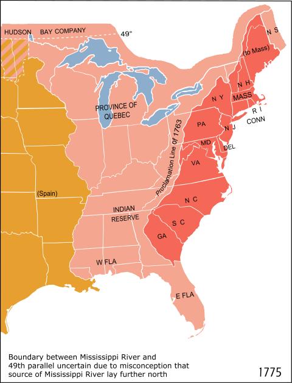
（北美13州的地理位置）
由于“邦联议会”的权力很小，其结果就是——很多事情根本进行不下去。于是【联邦主义】的政治思潮就开始兴起。持有这种想法的人觉得：“邦联”太过松散，啥事儿也干不了。应该把“邦联”改革为“联邦”，至少要建立一个“中央政府”（注：邦联时期，【没有】中央政府）。
这些人被称作“联邦主义者”（洋文叫做：Federalist）
与“联邦主义者”相对立的，并不是单一的群体，而是有多种群体。他们之间的理念有所不同，主要共同点是——都反对“建立联邦”。为了叙述方便，称之为“反联邦主义者”（洋文是：Anti-Federalists）。
这个群体至少包括如下几种人（注：以下几类人有交集，有的人同时属于某几类）：
1. 州权主义者
这些人的信条大致可概括为“州权至上”。
他们认为“州”就已经是独立的国家了。建立“联邦”会削弱“州的主权”。
2. 古典自由主义者
古典自由主义通常提倡“小政府”，警惕“大政府”（注：对“大政府 ＆ 小政府”的概念不要望文生义，详细解释参见博文《“政治体制”与“系统健壮性”——基于“复杂性科学”的思考》）。
让各州组成松散的邦联，比较符合这些人理想中的“小政府”；一旦组成联邦，有一个中央政府，他们会感到不安。
3. 民权主义者
提倡民权运动的人士，不喜欢有一个覆盖13州的中央政府。
他们担心这个中央政府过于强势，会威胁到基本的人权/民权。
4. 对英王心有余悸者
那时距离独立战争不久，在北美13州里面，有很多人参加过独立战争。
他们冒着生命危险才推翻了“英国佬的专制”，当然对“中央政府”这个玩意儿非常警惕。
以当时的政治生态，“联邦主义者”本来是处于弱势。为了改变现状，一些“联邦主义者”开始写文章介绍“联邦的必要性”。为了打消公众对“独裁”的顾虑，他们也写了很多文章介绍“权力制衡”的机制。经过几年的努力，终于改变了公众及很多政坛人物的看法，并间接促成了1787年的“费城制宪会议”。
这一系列文章，主要出自三个人的手笔，分别是：【亚历山大·汉密尔顿 ＆ 詹姆斯·麦迪逊 ＆ 约翰·杰伊】。三人中名气最小的杰伊，建国后成为美国最高法院【第1任】首席大法官。至于前面两位，对美国政治版图产生了重大影响，接下来的章节会细谈。
到了1788年（此时宪法已经制定，正在等待各州审批），这些文章首次汇总出版，也就是后世非常有名的《联邦党人文集》。此书有时候也被称作《美国宪法原理》，在俺的网盘分享此书的电子版。
顺便吐槽一下翻译：
《联邦党人文集》这个中文译名【很糟糕】——更准确的译名应该是《联邦主义者文集》。因为美国政坛后来出现了一个“联邦党”，是由此书第1作者汉密尔顿创立的。但第2作者麦迪逊并【不是】联邦党的成员（反而是与联邦党【敌对】的另一个政党的成员）。
在本文后续部分提及此书，俺会使用《联邦主义者文集》这个译名。
要聊美国的政党演变，自然会涉及到《美国宪法》与“选举制度”。
关于宪法的诞生过程，可以看俺网盘上分享的那本《费城风云——美国宪法的诞生和我们的反思》。此书详细介绍了：美国开国元勋为了制定宪法，如何激烈争吵（差点都打起来了）。
至于美国的选举制度，上一次美国大选年（2016），俺已经写了如下两篇，本文就不重复唠叨了。
《聊聊美国政体中的权力制衡——不仅仅是三权分立》
《美国选举制度为啥是这样设计的？兼谈其历史演变》
由于美国的法律体系属于“英美法系/海洋法系”，俺在今年（2020）又单独写了一篇长博文，介绍该法系的特点及历史演变，感兴趣的同学请看《如何理解“英美法系”（普通法系）——从“英国古代史”聊到“香港国安法”》。
在1787年的制宪会议中，《美国宪法》已经出炉。根据宪法条文，这部宪法至少要得到13州里面的9个州批准，才可以生效。一直到1788年6月21日，终于凑够了9个州，宪法生效。“邦联议会”根据宪法设置了过渡的时间表。到了1789年3月4日，联邦政府正式开始运作。
当时德高望重的乔治·华盛顿，毫无悬念地出任第一任总统（也是第一届总统）。国会两院的议员也都选出来，很多都是独立战争时期的功勋人物。
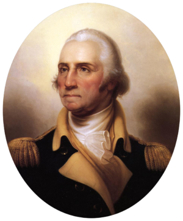
（乔治·华盛顿）
如果你仔细研究《美国宪法》的原稿，会发现——其中根本【没】提及“政党”的概念。为啥捏？参与立宪的那帮美国国父【们】（注：洋文中“美国国父”是个【复数】，称作“Founding Fathers”），对政党是嗤之以鼻滴。他们觉得：政党必然会导致腐朽龌龊的政治。
既然开国元勋们都鄙视政党，建国初期的美国政坛也就【没有】政党的概念。因此，华盛顿总统也是仅有的一位【无党派】总统（某些史书把他归入“联邦党”，但这种说法不严谨）
华盛顿就任总统后，除了副总统是选出来的，内阁全部成员及最高法院的9个大法官都由他提名。这套班子堪称豪华阵容（清一色的开国元勋）。
上述豪华阵容中，对美国历史影响最大的是如下两位：
美国建国初期，各州都欠了一屁股债（主要是独立战争留下的债务）。作为财政部长的汉密尔顿急需解决这些问题。因此他提出了一系列措施：
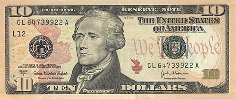
（10美元纸币上有汉密尔顿的头像）
但上述这些措施遭到国务卿杰斐逊的激烈反对，此人是典型的【古典自由主义者】（前面章节提到过这类人）。杰斐逊坚信“小政府”，反对“大政府”，他把汉密尔顿的经济计划视作“通往大政府之路”。
当年与汉密尔顿并肩作战的麦迪逊（《联邦主义者文集》第2作者），也为了这事儿跟汉密尔顿翻脸，与杰斐逊一起反对汉密尔顿。而当时的副总统约翰·亚当斯则支持汉密尔顿。于是在美国政坛高层就逐渐形成了两个圈子：汉密尔顿的支持者称作“亲行政派”（也称“汉密尔顿派”）；汉密尔顿的反对者称作“反行政派”（也称“杰斐逊派”）。
在这个时期，虽然有派系，但【尚未】形成真正意义上的政党。
小知识：
华盛顿干了4年就想退休，被众人极力挽留，才同意连任。干了8年后，本来大伙儿还想让他接着干，但华盛顿死活不同意了。因此在很长一段时间，“总统只连任一次”成为某种【惯例】（但不是法律）。这个惯例一直保持到二战时期，才被小罗斯福（富兰克林·罗斯福）打破。正是由于小罗斯福的破例，他死后不久（1947）美国国会通过了“宪法第22修正案”，从法律上对总统任期进行严格限制（该修正案于1951年生效）。
到了华盛顿第1个任期的尾声，上述两个派系的支持者开始扩展到政坛以外。汉密尔顿的经济措施有利于“金融业、制造业、贸易”，得到了【工商界人士】的支持；但汉密尔顿想要维持常备海军的计划，遭到【农民＆种植园】的抵制（维持常备海军很烧钱，意味着增税。常备海军对贸易有利，但对农业州的好处不明显）。
其结果就是：“杰斐逊派”得到了自耕农＆种植园主的支持。而城市居民则大都支持“汉密尔顿派”。
再后来，报界（舆论界）也开始站队——各大知名报刊，都纷纷支持其中一边。当时的报界把“汉密尔顿派”称作“联邦党人”，把“杰斐逊派”称作“民主党人 or 共和党人”。于是就逐渐形成了两大政党：联邦党 VS 民主共和党。
在美国史学界，“联邦党 VS 民主共和党”的体系被称作“第一政党体系”（First Party System）。通常以【1792】作为“第一政党体系”的时间起点。因为在1792年的大选中，首次出现政党色彩。
那年华盛顿刚干完一届，准备连任。考虑到没人能与之争锋，两大党都把注意力集中在“副总统”的宝座上。
当时的总统选举与如今不同——每个“选举人”可以投2票（投给2个人），票数最高的当总统，票数第二的当副总统。也就是说，两大党的候选人，谁的票数第二，谁就是副总统。
（注：如果你不了解“选举人是啥玩意儿”？可以看俺在2016大选前写的这篇评论文章，其开头部分介绍了“选举人制度”的相关知识）
话说1792年有3个主要候选人——
约翰·亚当斯票数第二，继续当他的副总统。
小插曲：
其实杰斐逊也参加了选举，但民主共和党力推的候选人却是“纽约州州长”。为啥不推举本党领袖捏？
因为杰斐逊与华盛顿同属弗吉尼亚州。当时的选举法规定：每个州的选举人不能把自己的2票都投给本州的候选人。为了避免与华盛顿撞车，民主共和党需要找一个【非】弗吉尼亚州的候选人。最终选了纽约州（当时是摇摆州）的州长作为本党候选人。
刚才已经聊了两党各自的支持者。后来两党的分歧还进一步扩展到外交领域。
那个时候正值法国大革命时期。1793年的“奇尔德斯号事件”导致英/法进入交战状态。美国官方的口径是保持中立，但两大党各有自己的倾向。
前面说了——“汉密尔顿派”的基本盘是工商业者。由于美国与英国的贸易往来密切，“联邦党”倾向于“亲英”。
而“民主共和党”的支持者大都是自耕农，他们很看不惯英国佬的贵族作派，更喜欢法国大革命的民粹风气。所以“民主共和党”倾向于“亲法”。
前面提到：华盛顿干了8年总统，死活不同意再连任了。因此，1796年的大选是美国历史上第一次【有悬念】的总统选举。（1792年那次，只有副总统有悬念，总统无悬念）。
这次选举，民主共和党创始人杰斐逊亲自出马，而联邦党再次推出（已干了8年副总统的）约翰·亚当斯。除了这两位老兄，两大党还有其它一些候选人。
正常情况下，每个党搞两个候选人足矣（一个总统，一个副总统）。但在1796年的时候，党派政治刚刚开始，政党的协调能力（尤其是跨州协调）不足，才会出现这种局面，并导致选票高度分散。
最终得票结果是：
（注：后面还有好几个候选人，就不一一列出啦）
俺在前面提到：选举人票数第二的，担任副总统。于是就出现了空前绝后的搞笑局面——杰斐逊在亚当斯的手下当副总统（总统、副总统分属两个【对立政党】）。
那次选举，联邦党不光拿下总统宝座，还同时拿下了国会参众两院。因此，1796~1800是联邦党的辉煌时期。
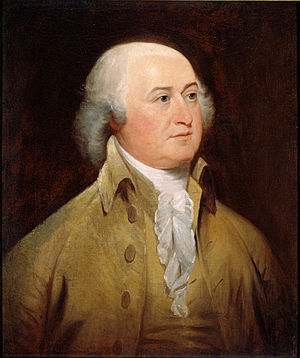
（约翰·亚当斯，又称“老亚当斯”）
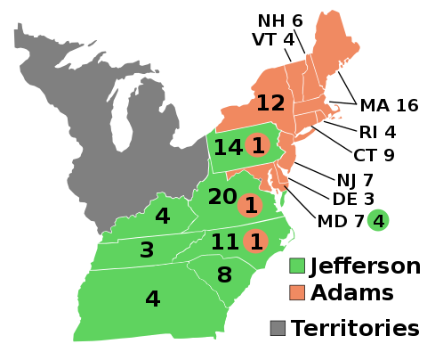
（1796年大选——橙色是联邦党；绿色是民主共和党；灰色是“领地”，尚未正式纳入联邦）
到了1800年，两大党的跨州协调能力已经有所提升，并且也吸取了上次选票分散的教训。所以这次大选，候选人比较集中，选举人的投票也比较集中——
联邦党的主要候选人还是亚当斯，竞选搭档是托马斯·平克尼（1796年露过脸）。
民主共和党的主要候选人还是杰斐逊，竞选搭档是阿伦·伯尔（1796年也露过脸）。
前面说了——当时的选举人票【不区分】总统＆副总统。所以两大党在选举人投票前都做了安排——必须故意让本党的竞选副手【少得一票】。否则的话，本党的两个候选人票数相同，会出现法律纠纷。
联邦党确实做到了这点——其主要候选人亚当斯得65票，搭档托马斯·平克尼得64票（有一个联邦党的选举人故意把一票投给约翰·杰伊，约翰·杰伊总共只得1票）。
但是民主共和党出了纰漏（没有协调好），导致杰斐逊与搭档阿伦·伯尔的票数相同（两人都是73票）。偏偏民主共和党又是本次大选的赢家。这下麻烦了。
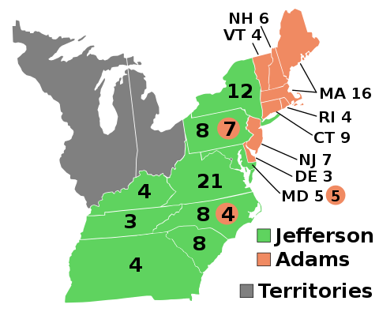
（1800大选——绿色是民主共和党；橙色是联邦党；灰色是“领地”，尚未正式纳入联邦）
根据宪法，如果有两个候选人的“选举人票数”并列第一，需要由【众议院】投票选出下一任总统，并且这个投票是特殊的投票——以州为单位（每州一票），且必须有人获得【过半多数】才能成为下一个总统。当时美国有16个州，意味着要在众议院得到9个州的支持。
众议院投票的时候，民主共和党的众议员显然都投给本党领袖杰斐逊。但联邦党的众议员大都很讨厌杰斐逊（毕竟是敌对党派的领袖嘛），他们就故意投票给阿伦·伯尔。于是经形成【僵局】——杰斐逊与阿伦·伯尔都拿不到绝对多数。
僵局是如此之严重，众议院花了7天时间，进行了【35轮】投票，每次都是8个州支持杰斐逊，6个州支持阿伦·伯尔。还有两个州（佛蒙特＆马里兰）弃权。因为这两个州的众议员人数是偶数，并且投给两人的票数相同，只能算弃权。
眼看着美国总统就要难产，这时候身为联邦党创始人的汉密尔顿站出来说话啦。他对本党的众议员说了一番话（以下是大意）——
也是由于这次宪政危机，美国国会赶紧在1803年通过了“宪法第12修正案”，并在1804年的大选前生效。从那之后，每个选举人投出的2票，需要明确标注：哪张票是“总统”，哪张是“副总统”。
小插曲：
因为被汉密尔顿说成是“无原则的人”，阿伦·伯尔一直怀恨在心。两人的矛盾日后愈演愈烈，到了1804年，演变为两人决斗。汉密尔顿在决斗中受重伤，次日死亡。
前面提到——民主共和党的杰斐逊在1800年夺得总统宝座。他后来连任成功，干了8年（1809年3月卸任）。
在他当政的这8年，联邦党开始衰弱。其中一个原因，汉密尔顿与老亚当斯不和；另一个原因，汉密尔顿死于决斗，对联邦党也是一大打击。但真正让联邦党遭受致命一击的事件，是后来的英美战争（1812战争）。
谈美国历史，这场战争是必谈的话题。在美国历史中，这次战争甚至被称作是【第二次独立战争】。
战争是美国佬先挑起来滴，主要是想吞并“英属北美”（如今加拿大的东南部）。
那时候的大英帝国号称“日不落帝国”，英国皇家海军也是全球最强。所以欧洲的军事观察家都看好英国，而且都认为：英国佬会在“海战”方面大获全胜，美国佬最多只能在“陆战”方面占点小便宜。
但战争结果出乎所有人意料——
【海战方面】，美国佬竟然占了上风——开战初期，美国海军就俘获大量英国船只（包括三艘皇家海军战舰）
【陆战方面】，双方互有胜负——英国佬一度丢失英属北美的首府约克（如今加拿大的多伦多），后又夺回；美国佬一度丢失首都华盛顿特区，后又夺回。
最终结果，打成平手（双方签了《根特条约》，美/加边境维持原状）。当时英/美两国体量悬殊，对美国佬而言，只要不输就是赢。通过这场战争，美国佬让欧洲几个大国刮目相看，从此也跻身“世界列强”的行列。
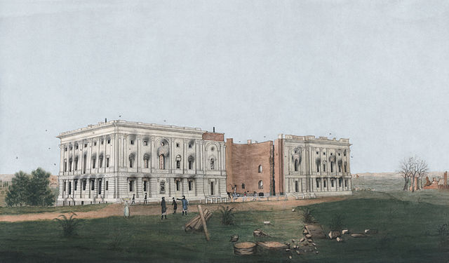
（被英军焚毁的美国国会大厦。水彩画，绘制于1814年）
可能有些读者会【误以为】：美国佬因为先动手，让英国佬措手不及，所以才占了便宜。
俺稍微补充一下：
这场战争从1812打到1815。前两年（1812＆1813），英国佬的主力在欧洲与拿破仑纠缠，因此英国佬在北美大体上采取【守势】。到了1814年3月，第6次反法同盟攻入巴黎，拿破仑被迫宣布退位。既然已经摆平了拿破仑，英国佬开始把海陆军主力调到北美。当时很多欧洲军事观察家认为：一旦英军主力调到北美，美国佬就会输掉。
但即使在英军大量增兵北美之后，双方依然是互有胜负——
英国佬在1814年8月攻占【华盛顿特区】。
美国佬在1814年9月获“尚普兰湖大捷”；1815年1月获“新奥尔良大捷”。
正是由于双方势均力敌，英国佬自己心里也没底，才会同意签《根特条约》。
小插曲：
《根特条约》最终签署是1814年12月24日，地点在比利时小城根特。当时还没有电报，消息传到北美要好几星期。由于不知道签约的消息，英美双方于1815年1月8日在新奥尔良又大干了一仗。此战是1812战争的最后一役。英军突袭新奥尔良，装备与人数都是英军显著占优；美军在30分钟内仓促应战。经过一番激战，结果竟然是美军大捷——英军伤亡人数达美军的数倍，且英军有多名高级军官（包括两名少将）被击毙。新奥尔良的美军指挥官【安德鲁·杰克逊】因此名震全国（此人是后续章节的重要人物）。
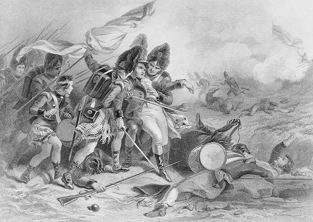
（新奥尔良战役，英军最高指挥官帕克纳姆少将被击毙。绘制于1815年）
历史往往很微妙——
如果在根特的谈判【提前】两三周，那么签约的消息来得及传到新奥尔良，就【不会】有“新奥尔良战役”，安德鲁·杰克逊也不会名声大震，之后美国的历史就不一样了。
反之，如果谈判【推迟】两三周，那么当条约还没有签署的时候，“新奥尔良大捷”的消息就已经传到比利时。由于这次大捷是整场战争中美军最戏剧性的胜利，在这种情况下，美国谈判代表就不一定肯签这个条约了（他们会提出更高的要价）。那未来的历史也会不同。
从这里可以感受到明显的【蝴蝶效应】。很多研究“政治＆历史”的学者属于【人文背景】，他们往往不懂得“混沌理论 ＆ 复杂性理论”。所以俺建议：人文背景的读者多看几遍《“政治体制”与“系统健壮性”——基于“复杂性科学”的思考》
在前面的章节提到了——“联邦党”的外交传统是【反法亲英】，而“民主共和党”的外交传统是【反英亲法】。
在1812战争【之前】，联邦党就极力反对与英国开战。战争开打之后，到了最关键的第3年（1814年），英国进行大规模海上封锁，严重打击了新英格兰地区的工商业。当地的联邦党政客召开“哈特福德会议”（Hartford Convention），有人威胁“要与英国单独媾和”，还有人提出“要么停战、要么分裂”（以“脱离联邦”相威胁）。
凡此种种，让联邦党成了民众眼里的“卖国贼”，声望一落千丈，从此一蹶不振。
当联邦党逐步退出历史舞台，自然就让“民主共和党”一党独大。
1812战争的时候，美国总统是麦迪逊（前面聊过他）。此人不光是《联邦主义者文集》的第2作者，还被誉为“权利法案之父”（最早的10条宪法修正案都是他起草的，这10条都与“人权＆民权”有关，被称作“权利法案”）。他跟杰斐逊一样，也成功连任（干了8年）。
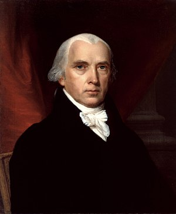
（詹姆斯·麦迪逊）
麦迪逊的接班人是詹姆斯·门罗（就是提出“门罗主义”的那个门罗），门罗也干了8年。因此，从1800到1824的24年间，是3个民主共和党的总统在统治；并且从1803~1824年，民主共和党还同时控制了国会参众两院。
小插曲：
1820年的大选，是美国历史上第三次（也是最后一次）【无悬念】的大选（另两次是华盛顿，前面的章节聊过）。
这一年门罗争取连任，没人出来与之竞争，使他轻松胜出。照理说他应该得全票。但因为新罕布什尔州的某个选举人故意把“选举人票”投给不相关的人（非候选人）。所以门罗距离全票还差一点点。
注：“选举人”隶属于【州】，在投票时必须忠实反应本州的意向。如果违背了，就称作“失信选举人”（faithless elector）。
当年那个选举人为啥要失信捏？民间流传一个说法：他认为只有华盛顿总统才有资格享受【全票】的待遇，就故意让门罗得不到全票。
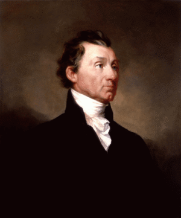
（詹姆斯·门罗）
在美国历史上，门罗在位的那8年（1816~1824）被称作“感觉良好的时代”（Era of Good Feelings）。
一个主要原因是：“第二次美英战争”在1815年结束，双方打成平手。那之后的几年，美国各地都弥漫着某种战胜的喜悦（前面俺说过——与全球老大干仗，不输就是赢）。另一个原因是：联邦党彻底瓦解。因此在门罗当政的8年时间里，政坛的“党争”少了很多。
著名军事理论家约翰.富勒在其代表作《西洋世界军事史》中写道：
1824年大选是美国政治历史中非常重要的标志性事件。美国政治格局从“第一党系”过渡到“第二党系”。
前面聊到：“联邦党的瓦解”导致了“民主共和党”一党独大的局面。但这种局面并【没能】消除之前的隔阂——比如工业州与农业州的分歧，比如自由州与蓄奴州的分歧，都依然存在；社会各阶层的矛盾也依然存在。
分歧与矛盾积累了足够长时间，就在“民主共和党”内部产生不同的派系。只是由于门罗总统很强势，党内分歧被掩盖，所以才有8年时光的“Era of Good Feelings”。等到他干完8年，卸任总统，党内分歧就显露出来了。
1824年的大选，民主共和党内出现“4国大战”，每个候选人都是重磅人物。下面俺分别来介绍：
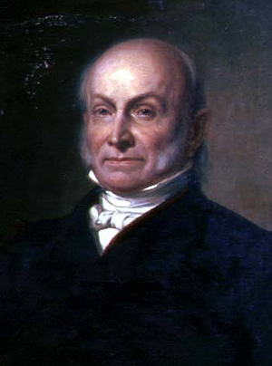
（昆西·亚当斯，又称“小亚当斯”）
此人的亲爹是约翰·亚当斯总统（前面聊过，联邦党仅有的一位总统）。为了区分，有时候把他老爸叫做“老亚当斯”，把他称作“小亚当斯”。
虽然是“官二代”，但他【并不是】靠老爸才当上国务卿（他老爸所在的联邦党早就过气了）。他能上位，全凭自己的实力。举几个例子：
比如说：大名鼎鼎的《门罗宣言》，主要是由他构思和起草。门罗总统只不过拿到了“冠名权”。
比如说：“第二次美英战争”结束不久（1819），身为国务卿的小亚当斯，凭三寸不烂之舌，不费一兵一卒就从西班牙手中夺得佛罗里达。
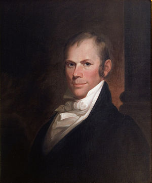
（亨利·克莱）
此人是美国政治史上有名的演说家。因为擅长化解南北州（自由州＆蓄奴州）之间的矛盾，在美国史中被称作“伟大的调解者”（关于他如何化解南北方矛盾，后续章节会提到）
他曾经担任国务卿，1824年大选时，正在担任众议院议长。
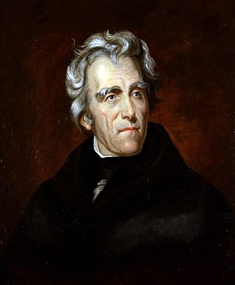
（安德鲁·杰克逊）
在4个候选人中，俺重点要聊的是他——因为此人是“第二政党体系”时期的核心人物（为了打字省力，本文后续部分简称他为杰克逊）。
他在“1812战争”中崛起，被誉为美国战争英雄。上一个章节提到的“新奥尔良大捷”就是他指挥滴；在那之前，他还指挥过“蹄铁湾大捷”。
1815年战争结束后，杰克逊开始从政。刚才聊到：亚当斯凭着三寸不烂之舌，夺得佛罗里达。佛州成为美国领地之后，第1任州长就是杰克逊。在美国历史上，他也是第一个真正意义上的【民粹主义政客】——不仅因为其政治理念有强烈的民粹主义色彩，而且他本人就出身于社会底层。
他是美国总统里面，最后一个参加过独立战争的（当年他才13岁，在大陆军当信差）。独立战争期间，他被英军俘虏（所以他也是美国总统里面，唯一当过战俘的）。在英军战俘营中，他因为拒绝给某个英国军官擦皮靴，被砍了一刀，左脸上有很深的刀伤。
杰克逊后来非常痛恨英国佬（1812战争期间屠杀过英军战俘），可能与上述经历有关。
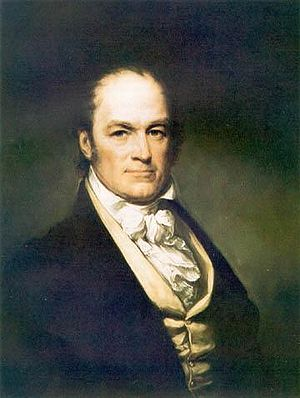
（威廉·克劳福德）
相比前面3位，此人的名气稍微小一些。他在麦迪逊总统手下担任过“战争部长、财政部长”。
顺便说一下：美国建国之后很长时间里，“战争部”与“海军部”并列（这2个部的部长都是内阁成员）。“战争部”负责陆军（后来还包括空军），“海军部”负责海军（后来还包括海军陆战队）。一直到1949年成立“国防部”，才把这两个部统一起来。
1824年的投票结果，杰克逊的票数最高，但因为有4个候选人，且实力相当，选举人票数比较分散——无人获得过半票数。
投票结果是：
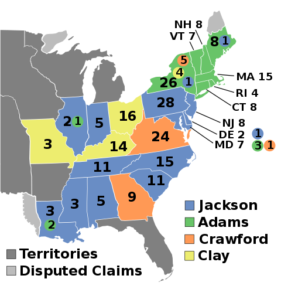
（1824年大选——蓝色：杰克逊；绿色：小亚当斯；橙色：克劳福德；黄色：克莱）
从选战地图可以大致看出——杰克逊的基本盘大部分在【南方】。亚当斯的基本盘在【东北方】（新英格兰地区）。
虽然杰克逊票数最多，但他【没】过半，【无法】直接当选。按照宪法（以及第12修正案）的规定，如果没有人获得过半的选举人票，需要由众议院选出下一任总统（类似的情况1800年出现过一次，前面的章节已经聊过）。
在聊“1800年宪政危机”时，俺提到了1803年提出的“宪法第12修正案”。该修正案除了对“选举人票”作出区分（区分“总统＆副总统”），还增加了一个规定——如果有多个总统候选人，且无人过半，只挑选得票最多的【3人】，交由众议院再次投票。
因为有这条规定，上述4人中票数最少的亨利·克莱直接被淘汰，“4国大战”变“3国大战”。
照理说，杰克逊应该是胜算最高的——
其一，他的普选票最多。
其二，（前面说过）一旦由“众议院选总统”，是以【州】为单位。从刚才那张选战地图上看，支持他的州也最多。
但因为杰克逊是民粹主义者，再加上他脾气暴躁，作风血腥（战争期间，他屠杀过英军战俘、屠杀过印第安部落），其他三人都讨厌他。克莱反正已经没戏了，（作为议长）他动用自己在众议院的影响力，让自己的支持者改投亚当斯，最终是小亚当斯当选总统。
刚才聊到：小亚当斯在1824年的混战中当选。后来他组阁的时候，提名亨利·克莱担任国务卿。此举被杰克逊的支持者痛斥为“政治交易、政治分赃”。杰克逊一气之下，另起炉灶搞了个“民主党”（也就是如今的这个民主党）。此举也标志着“民主共和党”正式分裂。
杰克逊刚创建该党时，名称并不是“民主党”。该党的第一次全国代表大会，正式名称是“合众国诸州共和党代表大会”，从会议的名称来看，最早的党名应该是“共和党”。后来又改叫“合众国民主党”，再后来才固定为“民主党”。
杰克逊在1828年赢得总统选举，1832年连任成功。1836年，他的副手马丁·范布伦又赢得总统大选。民主党连续掌权12年，在美国政坛站稳了脚跟，至今都是美国两大党之一。
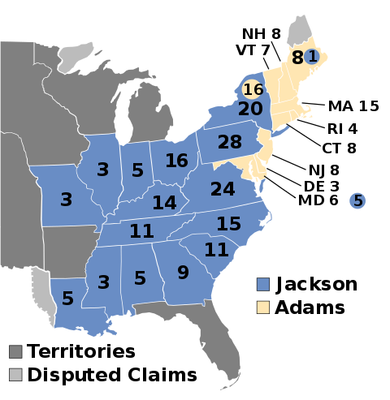
（1828年大选，政治版图更加明显——除了东北部的新英格兰及周边，其它都被民主党囊括）
小插曲：
由于杰克逊脾气暴躁，他的政治对手戏称他为“Jackass”（公驴），没想到杰克逊还挺喜欢这个绰号。后来“民主党”的驴子形象，就起源于此。
杰克逊分家之后，“民主共和党”由总统小亚当斯＆国务卿亨利·克莱两人掌控。他俩把“民主共和党”改组为“国家共和党”。于是美国政坛开始进入“第二政党体系”——民主党 VS 国家共和党。
1828年大选，杰克逊的势头依然很猛。小亚当斯以“国家共和党候选人”的身份寻求连任，败给了杰克逊。
到了1832年大选，“国家共和党”推出亨利·克莱为总统候选人，又输给杰克逊（杰克逊连任成功）。
连着两次失败之后，小亚当斯与克莱解散了“国家共和党”，于1833年另组“辉格党”。于是美国政坛又演变为——民主党 VS 辉格党。
“辉格党”（Whig Party）这个名称借用了英国的同名政党。英国的那个“辉格党”是以【反对王权】而著称。小亚当斯与克莱两人采用这个党名，既是想影射杰克逊担任总统时，过于专权（类似于英王）；又表明该政党的宗旨是“反杰克逊”。
为啥要另搞一个新政党捏？因为小亚当斯与克莱两人意识到——杰克逊煽动民粹的能力太强，光靠“国家共和党”在北部工业州的基本盘，想扳倒杰克逊很难。必须再联合南部州的“反杰克逊势力”。
南部州本来是杰克逊的地盘，怎么会有“反杰克逊势力”捏？这就要聊到1832年的【无效化危机】。
前面提到：杰克逊在1828年首次夺得总统宝座，当时他的竞选搭档是“约翰·卡尔霍恩”。此人虽然在南北战争【之前】就死掉了，但却被视为“美利坚同盟国”（南北战争中的南部邦联）的精神导师。
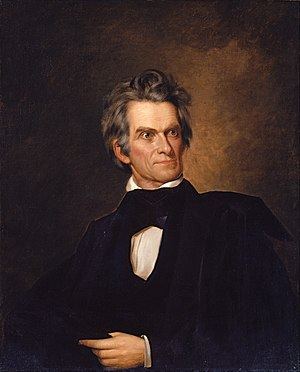
（约翰·卡尔霍恩）
他最大的影响是：在1828年提出了【无效化理论】。啥意思捏？俺简单介绍一下——
他本人的政治理念类似于建国之前的【州权至上主义】（本文开头聊过这类人）。“无效化理论”的核心观点是：任何一个州都可以自己判定某个【联邦法律】是否违宪；如果判定违宪，州政府可以拒绝执行该联邦法律。
他为啥要搞出这个理论捏？事情源于一场“关税纠纷”——联邦政府对欧洲进口商品征收高关税，此举对北部的工业州比较【有利】，但对南部的农业州比较【不利】。于是遭到了南部州的抵制。
卡尔霍恩本人生于南卡罗来纳州（蓄奴州），针对关税纠纷，他在1828年发表了一篇《南卡罗来纳州的声明与抗辩》（South Carolina Exposition and Protest），其中提出了上述“无效化理论”。南卡的州政府得到了副总统的撑腰，显得更有底气，继续跟联邦政府叫板。
之后的几年间，总统与副总统两人在这个问题上不断互掐。卡尔霍恩的“无效化理论”也得到越来越多南部民众的支持——这些人都是铁杆的奴隶制支持者，被称作“无效党人”。
事情一直闹到1833年，作为对南卡的回应，国会通过了《武力法案》（Force Bill），允许总统动用军队来强迫某个州政府履行联邦法律。凭借《武力法案》，杰克逊总统把海军战舰调到南卡的查尔斯顿港。而南卡的州政府也再次宣布《武力法案》违宪。
这就是美国历史上著名的“无效化危机”（洋文叫做“Nullification Crisis”），有时也称“分离危机”（Secession Crisis）。
本来事情已闹得不可收拾。这时候，前面提到的【调解大师】亨利·克莱出面了（此时他的身份是：“国家共和党”的领袖）。他提出了一套复杂的折衷方案，使得双方都做了一些让步，从而化解了此次宪政危机。但对于“无效化理论”，亨利·克莱并【没有】给出确切的说法，争议双方也【并未】达成共识。
于是，这个“无效化理论”就成为一个潜在的引爆点。后来南北战争爆发，很多南部州宣布脱离联邦，就引用了这个理论。
在调停这场危机的过程中，亨利·克莱意识到：南部州有很多“无效党人”。这些人对杰克逊处理危机的手法很不满，认为杰克逊背叛了南方（注：杰克逊本人就出生于南卡罗来纳）。于是，亨利·克莱与小亚当斯就组建了一个新的政党（辉格党），把北方与南方那些对杰克逊不满的人，都笼络起来。所以，“辉格党”严格来讲是个【大杂烩】，“辉格党人”仅有的共同点是“反杰克逊”。
如今的美国央行是美联储。在美联储之前，美国出现过两个央行，分别是：“美利坚合众国银行”＆“美利坚合众国第二银行”（有时候为了避免混淆，把前者称作“美利坚合众国第一银行”）。
美联储之前的这2个央行，前一个由汉弥尔顿设立（本文开头提到了），其联邦执照的有效期20年（1791~1811）。由于“第二次美英战争”的军费开支巨大，联邦政府又欠了一屁股债，于是1816年又成立了“美利坚合众国第二银行”，执照有效期依然是20年（1816~1836）。
前面说了：杰克逊有典型的【民粹主义】倾向。他一贯很敌视央行，认为央行会沦为大型财团剥削民众的工具。所以他在1832年终止了“美利坚合众国第二银行”的运作。此时该银行的联邦执照【尚未】到期，杰克逊的做法招致很大争议。

（美国银行业发展史）
俺曾经写过一篇《扫盲“货币经济学”基本概念——从“利率”到“央行货币政策”》，其中有个章节专门介绍了【央行在经济危机时的关键作用】。就在杰克逊摧毁央行之后不久（1836~1837），美国正好爆发经济危机。此时的总统是杰克逊的副手马丁·范布伦（Martin Van Buren），杰克逊自己在幕后垂帘听政。
当时已经没了央行，照道理说，联邦政府应该大力救助银行业（尤其是州立银行）。但由于执政的民主党有严重的民粹主义倾向，联邦政府不但没有救助银行业，还搞了个“独立财政”（Independent Treasury），把联邦资金留在国库，不借给州立银行或私营银行。此举加速了银行业的破产，并引发连锁反应。最终使得经济危机持续了6~7年之久。
正是长期的经济危机，才给了“辉格党”翻盘的机会。该党的威廉·哈里森在1840年大选击败寻求连任的范布伦，并且是压倒性胜利（选举人票 234 对 60）
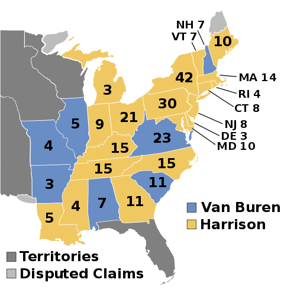
（1840年大选——蓝色是民主党；橙色是辉格党；灰色是“领地”，尚未正式纳入联邦）
但由于“辉格党”本身是个大杂烩，凝聚力严重不足。所以“辉格党”在历史上只赢得过两次大选，只出过4个总统（赢得大选的2个总统都在任内意外死亡，所以“辉格党”有4个总统）。
杰克逊不光创立了新的政党，还连任成功；他卸任后，他的接班人马丁·范布伦也成功夺得总统宝座。
他的成功得益于19世纪20年代的【普选权运动】。或者更准确地说是“男性白人的普选权运动”。在那之前，有投票权的必须是白人男性，并且有财产要求（个人财产要达到某个下限才有资格投票）。“普选权运动”使得各州逐步取消了对投票人的财产限制，选民的总数一下子猛增好几倍。
而杰克逊又是以【鼓吹民粹】而著称滴，很多底层的草根选民都愿意投他的票，再加上他的副手范布伦很善于在社区基层进行“深耕”。所以新创的“民主党”才能异军突起，开创一个时代。后世史学家把杰克逊开创的时代称作“杰克逊式民主”，又称“大众民主”。
“大众民主”改变了【博弈的方式】。在杰克逊之前，美国的选举属于“精英之间的博弈”（因为有【财产限制】，只有精英能参与博弈）。到了“大众民主时代”，草根也能参与选举。于是博弈范围就扩大为【精英与精英、精英与草根、草根与草根】的多重混合博弈。
当博弈的范围扩大了，通常也就意味着“博弈更充分了”，也就更有利于【系统达成均衡】。
引申阅读：
如果你不了解“系统均衡”的概念，可以参见今年（2020）4月份的博文《“政治体制”与“系统健壮性”——基于“复杂性科学”的思考》。
如果你不了解“博弈论”的知识，可以看《博弈论入门教程——从基本概念到具体案例》
当选民的【基数】变大了，政党为了胜出就必须能吸引足够多的选民。为了做到这点，每个政党都得把自己打造成高效的【选举机器】。于是就有很多手法被发明出来，比如“全国代表大会”。
在如下博文中有一个章节是
《美国选举制度为啥是这样设计的？兼谈其历史演变》
除了让政党变为“选战机器”，“大众民主”还促成了【第三党】的崛起。原因很简单——投票的门槛低了，参与政治的人就多了，各种各样的政治思潮就可以拿到台面上来。当某些人觉得：原有的两大党不符合自己的理念，自然就想组建其它政党。
当然啦，“组建政党”是一回事儿，有没有【影响力】，又是另一回事儿。在美国历史上，首个有影响力的“第三党”是1828年诞生的“反共济会党”（Anti-Masonic Party）。该党后来并入前面介绍的“辉格党”。
美国的开国元勋们，宗教色彩比较淡薄（很多信奉自然神论，甚至还有托马斯·潘恩这样的异类，敢公开反对一切宗教）。相比之下，杰克逊及其支持者，宗教色彩非常浓厚。杰克逊当政时期，开始大力鼓吹“向西部扩张”。后来“西进运动”的支持者还辅之以宗教色彩，叫做“天定命运”（洋文“Manifest Destiny”）。大意是说：北美大陆这块处女地是上帝赐予美国的礼物。
为了向西部扩张，杰克逊总统还签署了臭名昭著的《印第安人迁移法案》。这是他当政期间争议最大的法案，该法案把印第安人赶出密西西比河以东地区。
西进运动之前，美国各州主要集中在大西洋沿岸或五大湖周边。“西进运动”导致的结果就是——越来越多的“中西部州”加入联邦，中西部州的比重越来越高。美国政坛的生态也随之改变。
经热心读者提醒，加个补充说明，以示严谨：
“Manifest Destiny”一词最早出现在1845年；更早的18世纪有类似说法，但说法稍有不同。对“西进运动”的时间跨度，史学界未达成一致。
在“大众民主时代”【之前】，美国南北方（自由州 VS 蓄奴州）就一直有矛盾。但大体上还能维持“井水不犯河水”的状态（各自为政）。
刚才聊到了“西进运动”。在扩张西部的过程中，自然会有越来越多【新的州】加入联邦。那么，这些【新的州】要不要实行奴隶制，就成为南北方激烈争论的焦点。这就是所谓的“划线争议”——如何界定“自由州＆蓄奴州”的分界线？
早在门罗执政的1820年，“划线问题”引发的矛盾就已经显现。当时北美有一块面积很大的土地（路易斯安那领地），是美国佬趁火打劫，于1803年从拿破仑手中买来的。（那年拿破仑很缺钱，为了筹措军费，就把这片辽阔的土地【贱卖】给美国佬）。
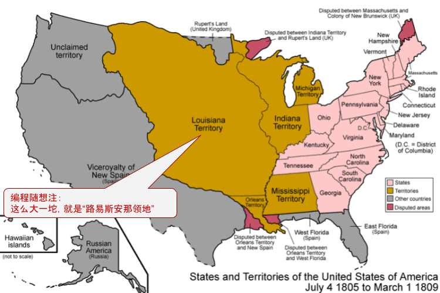
（从此图中可以直观体会到——“路易斯安那领地”有多么大）
经过十多年的殖民，美国佬计划把该领地分成几块，分别建立新的州，逐步纳入联邦。
到了1817年，其中一个新的州（密苏里州）要申请加入联邦。此时在参议院中，南北双方的席位一样（参议院的席位是【每州2席】。当时有11个自由州，11个蓄奴州）。如果密苏里州以“自由州”的身份加入，会使得参议院中北方的票数占优；反之，则使得南方的票数占优。
双方为此吵了两年，终于在1819年12月达成妥协，并在1820年签署协议（因此“密苏里妥协”也称“1820妥协”）。协议内容如下：
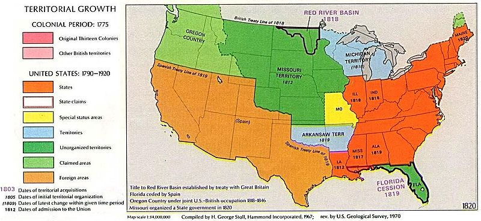
（黄色是“密苏里州”，“密苏里州”的南部边界就是【北纬36.5°线】
上方深绿色是“路易斯安那领地”中【禁止】蓄奴的区域，蓝色则是【允许】蓄奴的地区。
地图西部的橙色与浅绿色地区，当年还【不】属于联邦）
“密苏里妥协”并【没有】真正解决问题，只是把问题延后了——这就是典型的【治标不治本】。在评论区与读者交流时，俺多次提到：采用“治标不治本”的方式，只是在掩盖问题，而不是在解决问题。
1850年的事情基本上是1820年的翻版——
在19世纪40年代，美国佬通过“美墨战争”获得西部大片土地（包括如今的加州＆新墨西哥州）。这些土地也要以【新州】的身份加入联邦，于是又牵扯到奴隶制的问题。双方又吵翻天。
这时候，曾经化解1832年“无效化危机”的亨利·克莱又出来当和事佬（此时他的身份是：“辉格党”的领袖）。亨利·克莱不愧为调停大师（和稀泥大师），以他为首提交了5个法案，使得南北双方各自作出让步。这5个法案大致如下：
这个“1850妥协”最主要的政治后果是——辉格党瓦解。也就是说，亨利·克莱虽然成功地进行了调停，却把自己的党搞垮了。
前面聊过“辉格党”的特点——它是由“反杰克逊势力”组成的大杂烩。其中既有强烈【支持】奴隶制，也有强烈【反对】奴隶制。1850年的妥协，尤其是那个《逃奴法》，直接导致辉格党分裂成严重对立的两派。当时的辉格党总统（米勒德·菲尔莫尔）表态支持《逃奴法》，遭到党内很多人批评。到了1852年大选，菲尔莫尔想要争取连任，但是辉格党不推举他作为候选人，而是推举了陆军总司令斯科特将军。党内的分裂使得辉格党在1852年的总统选举中惨败。到1856年，“辉格党”就解散了。
前面俺已经聊过“1820妥协”（密苏里妥协）。根据当时的协议——“路易斯安那领地”新建立的州，除密苏里州外，禁止在【北纬36.5°线】以北实行奴隶制。
到了1854年，民主党议员提出了“堪萨斯-内布拉斯加法案”，要求让“堪萨斯州＆内布拉斯加州”这2个州的居民进行公投，自行决定本州要不要搞奴隶制。
这个法案等同于【废除了】“密苏里妥协”，因为这2个州位于北纬36.5°线以北，本来就禁止奴隶制。
该法案一提出，就遭到了自由州的强烈反对，但当时国会参众两院都是民主党控制，总统也是民主党。民主党的大部分支持者在南部州，所以该法案以微弱多数在国会得到通过。
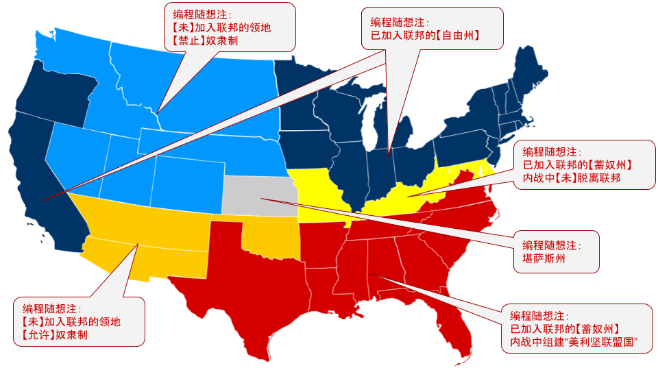
该法案通过之后，废奴派 ＆ 蓄奴派都想争取堪萨斯州。因为该州不管加入南北方的哪一边，都会改变当时的政治天平；而且该州的地理位置也很重要（从上面这张地图可以直观地看出来）。
于是，两派都拼命往堪萨斯州移民，以期在未来的“地方公投”占上风。双方的移民为了争夺地盘，在当地爆发大量的武装冲突，史称“堪萨斯内战”或“血溅堪萨斯”。从某种意义上说，“堪萨斯内战”是“南北战争”的一次预演和彩排。
几年之后，废奴派拿下了堪萨斯州——这意味着政治天平已经向【自由州】倾斜，也强化了南部州脱离联邦的倾向。围绕堪萨斯州的争夺战，可视作内战的直接导火索之一（另一个直接导火索是：支持废奴的林肯在1860大选中获胜）
堪萨斯州正式加入联邦是1861年1月29日——此时林肯已当选（但尚未就职），而南部州已经有6个州宣布脱离联邦。又过了不久，南北战争就开打了。
由于本文已经写得很长，先告一段落。
南北战争及之后的政党演变，俺计划另写两篇博文。
俺博客上，和本文相关的帖子（需翻墙）：
《聊聊美国政体中的权力制衡——不仅仅是三权分立》
《美国选举制度为啥是这样设计的？兼谈其历史演变》
《“政治体制”与“系统健壮性”——基于“复杂性科学”的思考》
《如何理解“英美法系”（普通法系）——从“英国古代史”聊到“香港国安法”》
《“水门事件”以及尼克松下台的经过》
《博弈论入门教程——从基本概念到具体案例》
《扫盲“货币经济学”基本概念——从“利率”到“央行货币政策”》
上一次美国大选年（2016），为了帮助读者了解背景知识，俺已经写了如下两篇。今年（2020）的大选，俺计划写《美国政党简史》，帮各位读者了解美国的“政治史”以及“政治版图的变迁”。
《聊聊美国政体中的权力制衡——不仅仅是三权分立》
《美国选举制度为啥是这样设计的？兼谈其历史演变》
★（1781~1789）邦联时期（建国之前）——联邦主义者 VS 反联邦主义者
要聊美国政治版图及其变迁，需要从建国【之前】开始说起。
◇建国之前的【邦联】，是啥玩意儿？
美国建国是以【立宪】为标志。《美国宪法》在1789年开始生效。在这之前（1781~1789），北美13个州处于【邦联】的状态（请注意：不要把“邦联”与“联邦”看错喽）。
在这个时期，最高行政机构是“邦联议会”（注：其前身是独立战争时期的“大陆会议”）。“邦联议会”兼具【立法＆行政】的职能，每州占一个席位（每州一票）。
虽然它兼具【立法＆行政】的职能，看起来好像很牛逼，但其实权力【很小】。“邦联议会”是根据《邦联条例》来运作。《邦联条例》赋予议会的权力很小——比如说：没有征税的权力；比如说：对于重大事项，必须所有州都同意才能推行 ......
（北美13州的地理位置）
◇联邦主义者（Federalists）
由于“邦联议会”的权力很小，其结果就是——很多事情根本进行不下去。于是【联邦主义】的政治思潮就开始兴起。持有这种想法的人觉得：“邦联”太过松散，啥事儿也干不了。应该把“邦联”改革为“联邦”，至少要建立一个“中央政府”（注：邦联时期，【没有】中央政府）。
这些人被称作“联邦主义者”（洋文叫做：Federalist）
◇反联邦主义者（Anti-Federalists）
与“联邦主义者”相对立的，并不是单一的群体，而是有多种群体。他们之间的理念有所不同，主要共同点是——都反对“建立联邦”。为了叙述方便，称之为“反联邦主义者”（洋文是：Anti-Federalists）。
这个群体至少包括如下几种人（注：以下几类人有交集，有的人同时属于某几类）：
1. 州权主义者
这些人的信条大致可概括为“州权至上”。
他们认为“州”就已经是独立的国家了。建立“联邦”会削弱“州的主权”。
2. 古典自由主义者
古典自由主义通常提倡“小政府”，警惕“大政府”（注：对“大政府 ＆ 小政府”的概念不要望文生义，详细解释参见博文《“政治体制”与“系统健壮性”——基于“复杂性科学”的思考》）。
让各州组成松散的邦联，比较符合这些人理想中的“小政府”；一旦组成联邦，有一个中央政府，他们会感到不安。
3. 民权主义者
提倡民权运动的人士，不喜欢有一个覆盖13州的中央政府。
他们担心这个中央政府过于强势，会威胁到基本的人权/民权。
4. 对英王心有余悸者
那时距离独立战争不久，在北美13州里面，有很多人参加过独立战争。
他们冒着生命危险才推翻了“英国佬的专制”，当然对“中央政府”这个玩意儿非常警惕。
◇《联邦主义者文集》的历史意义
以当时的政治生态，“联邦主义者”本来是处于弱势。为了改变现状，一些“联邦主义者”开始写文章介绍“联邦的必要性”。为了打消公众对“独裁”的顾虑，他们也写了很多文章介绍“权力制衡”的机制。经过几年的努力，终于改变了公众及很多政坛人物的看法，并间接促成了1787年的“费城制宪会议”。
这一系列文章，主要出自三个人的手笔，分别是：【亚历山大·汉密尔顿 ＆ 詹姆斯·麦迪逊 ＆ 约翰·杰伊】。三人中名气最小的杰伊，建国后成为美国最高法院【第1任】首席大法官。至于前面两位，对美国政治版图产生了重大影响，接下来的章节会细谈。
到了1788年（此时宪法已经制定，正在等待各州审批），这些文章首次汇总出版，也就是后世非常有名的《联邦党人文集》。此书有时候也被称作《美国宪法原理》，在俺的网盘分享此书的电子版。
顺便吐槽一下翻译：
《联邦党人文集》这个中文译名【很糟糕】——更准确的译名应该是《联邦主义者文集》。因为美国政坛后来出现了一个“联邦党”，是由此书第1作者汉密尔顿创立的。但第2作者麦迪逊并【不是】联邦党的成员（反而是与联邦党【敌对】的另一个政党的成员）。
在本文后续部分提及此书，俺会使用《联邦主义者文集》这个译名。
★（1789）立宪 ＆ 建国
要聊美国的政党演变，自然会涉及到《美国宪法》与“选举制度”。
关于宪法的诞生过程，可以看俺网盘上分享的那本《费城风云——美国宪法的诞生和我们的反思》。此书详细介绍了：美国开国元勋为了制定宪法，如何激烈争吵（差点都打起来了）。
至于美国的选举制度，上一次美国大选年（2016），俺已经写了如下两篇，本文就不重复唠叨了。
《聊聊美国政体中的权力制衡——不仅仅是三权分立》
《美国选举制度为啥是这样设计的？兼谈其历史演变》
由于美国的法律体系属于“英美法系/海洋法系”，俺在今年（2020）又单独写了一篇长博文，介绍该法系的特点及历史演变，感兴趣的同学请看《如何理解“英美法系”（普通法系）——从“英国古代史”聊到“香港国安法”》。
★（1789~1792）无政党时期——亲行政派（汉密尔顿派） VS 反行政派（杰斐逊派）
在1787年的制宪会议中，《美国宪法》已经出炉。根据宪法条文，这部宪法至少要得到13州里面的9个州批准，才可以生效。一直到1788年6月21日，终于凑够了9个州，宪法生效。“邦联议会”根据宪法设置了过渡的时间表。到了1789年3月4日，联邦政府正式开始运作。
当时德高望重的乔治·华盛顿，毫无悬念地出任第一任总统（也是第一届总统）。国会两院的议员也都选出来，很多都是独立战争时期的功勋人物。
（乔治·华盛顿）
如果你仔细研究《美国宪法》的原稿，会发现——其中根本【没】提及“政党”的概念。为啥捏？参与立宪的那帮美国国父【们】（注：洋文中“美国国父”是个【复数】，称作“Founding Fathers”），对政党是嗤之以鼻滴。他们觉得：政党必然会导致腐朽龌龊的政治。
既然开国元勋们都鄙视政党，建国初期的美国政坛也就【没有】政党的概念。因此，华盛顿总统也是仅有的一位【无党派】总统（某些史书把他归入“联邦党”，但这种说法不严谨）
华盛顿就任总统后，除了副总统是选出来的，内阁全部成员及最高法院的9个大法官都由他提名。这套班子堪称豪华阵容（清一色的开国元勋）。
| 职务 | 姓名 | 备注 |
|---|---|---|
| 国务卿 | 托马斯·杰斐逊 | 《独立宣言》第1作者 第3任总统 创建“民主共和党” |
| 财政部长 | 亚历山大·汉密尔顿 | 《联邦主义者文集》第1作者 约克镇大捷的战争英雄 创建“联邦党” |
| 战争部长 | 亨利·诺克斯 | 独立战争时期，大陆军最年青的少将 （注：当时的大陆军，最高军衔只有少将；即使华盛顿本人，也是建国后才授中将） |
| 司法部长 | 埃德蒙·伦道夫 | 费城制宪会议的核心人物 （注：制宪会议讨论了多个方案，最重要的是“弗吉尼亚方案”； 该方案是他与麦迪逊一起制定的，后来成为宪法的主体框架） |
| 最高法院首席大法官 | 约翰·杰伊 | 《联邦主义者文集》第3作者 |
上述豪华阵容中，对美国历史影响最大的是如下两位：
|
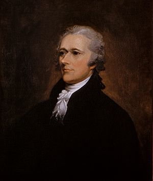 （亚历山大·汉密尔顿） |
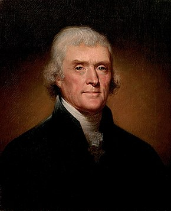 （托马斯·杰斐逊） |
美国建国初期，各州都欠了一屁股债（主要是独立战争留下的债务）。作为财政部长的汉密尔顿急需解决这些问题。因此他提出了一系列措施：
由联邦继承各州的债务上述这些措施被称作“汉密尔顿经济计划”。也可以说，他奠定了美国财政体系＆金融体系的基础。
建立关税体系
建立国债体系
设立中央银行（美利坚合众国银行）
......
（10美元纸币上有汉密尔顿的头像）
但上述这些措施遭到国务卿杰斐逊的激烈反对，此人是典型的【古典自由主义者】（前面章节提到过这类人）。杰斐逊坚信“小政府”，反对“大政府”，他把汉密尔顿的经济计划视作“通往大政府之路”。
当年与汉密尔顿并肩作战的麦迪逊（《联邦主义者文集》第2作者），也为了这事儿跟汉密尔顿翻脸，与杰斐逊一起反对汉密尔顿。而当时的副总统约翰·亚当斯则支持汉密尔顿。于是在美国政坛高层就逐渐形成了两个圈子：汉密尔顿的支持者称作“亲行政派”（也称“汉密尔顿派”）；汉密尔顿的反对者称作“反行政派”（也称“杰斐逊派”）。
在这个时期，虽然有派系，但【尚未】形成真正意义上的政党。
小知识：
华盛顿干了4年就想退休，被众人极力挽留，才同意连任。干了8年后，本来大伙儿还想让他接着干，但华盛顿死活不同意了。因此在很长一段时间，“总统只连任一次”成为某种【惯例】（但不是法律）。这个惯例一直保持到二战时期，才被小罗斯福（富兰克林·罗斯福）打破。正是由于小罗斯福的破例，他死后不久（1947）美国国会通过了“宪法第22修正案”，从法律上对总统任期进行严格限制（该修正案于1951年生效）。
★（1792~1824）“第一政党体系”时期——联邦党 VS 民主共和党
◇两大党的形成
到了华盛顿第1个任期的尾声，上述两个派系的支持者开始扩展到政坛以外。汉密尔顿的经济措施有利于“金融业、制造业、贸易”，得到了【工商界人士】的支持；但汉密尔顿想要维持常备海军的计划，遭到【农民＆种植园】的抵制（维持常备海军很烧钱，意味着增税。常备海军对贸易有利，但对农业州的好处不明显）。
其结果就是：“杰斐逊派”得到了自耕农＆种植园主的支持。而城市居民则大都支持“汉密尔顿派”。
再后来，报界（舆论界）也开始站队——各大知名报刊，都纷纷支持其中一边。当时的报界把“汉密尔顿派”称作“联邦党人”，把“杰斐逊派”称作“民主党人 or 共和党人”。于是就逐渐形成了两大政党：联邦党 VS 民主共和党。
◇1792年大选——第一次有政党参与的大选
在美国史学界，“联邦党 VS 民主共和党”的体系被称作“第一政党体系”（First Party System）。通常以【1792】作为“第一政党体系”的时间起点。因为在1792年的大选中，首次出现政党色彩。
那年华盛顿刚干完一届，准备连任。考虑到没人能与之争锋，两大党都把注意力集中在“副总统”的宝座上。
当时的总统选举与如今不同——每个“选举人”可以投2票（投给2个人），票数最高的当总统，票数第二的当副总统。也就是说，两大党的候选人，谁的票数第二，谁就是副总统。
（注：如果你不了解“选举人是啥玩意儿”？可以看俺在2016大选前写的这篇评论文章，其开头部分介绍了“选举人制度”的相关知识）
话说1792年有3个主要候选人——
华盛顿——无党派最终结果是：华盛顿得到【全票】（132票）——也就是说，132个选举人，每人都把自己2票中的一票投给华盛顿。
约翰·亚当斯——联邦党的候选人（原先就是副总统）
乔治·克林顿——民主共和党的候选人（原纽约州州长）
约翰·亚当斯票数第二，继续当他的副总统。
小插曲：
其实杰斐逊也参加了选举，但民主共和党力推的候选人却是“纽约州州长”。为啥不推举本党领袖捏？
因为杰斐逊与华盛顿同属弗吉尼亚州。当时的选举法规定：每个州的选举人不能把自己的2票都投给本州的候选人。为了避免与华盛顿撞车，民主共和党需要找一个【非】弗吉尼亚州的候选人。最终选了纽约州（当时是摇摆州）的州长作为本党候选人。
◇两党的【外交】分歧
刚才已经聊了两党各自的支持者。后来两党的分歧还进一步扩展到外交领域。
那个时候正值法国大革命时期。1793年的“奇尔德斯号事件”导致英/法进入交战状态。美国官方的口径是保持中立，但两大党各有自己的倾向。
前面说了——“汉密尔顿派”的基本盘是工商业者。由于美国与英国的贸易往来密切，“联邦党”倾向于“亲英”。
而“民主共和党”的支持者大都是自耕农，他们很看不惯英国佬的贵族作派，更喜欢法国大革命的民粹风气。所以“民主共和党”倾向于“亲法”。
◇1796年大选——联邦党的全盛时期
前面提到：华盛顿干了8年总统，死活不同意再连任了。因此，1796年的大选是美国历史上第一次【有悬念】的总统选举。（1792年那次，只有副总统有悬念，总统无悬念）。
这次选举，民主共和党创始人杰斐逊亲自出马，而联邦党再次推出（已干了8年副总统的）约翰·亚当斯。除了这两位老兄，两大党还有其它一些候选人。
正常情况下，每个党搞两个候选人足矣（一个总统，一个副总统）。但在1796年的时候，党派政治刚刚开始，政党的协调能力（尤其是跨州协调）不足，才会出现这种局面，并导致选票高度分散。
最终得票结果是：
| 候选人 | 政党 | 票数 |
|---|---|---|
| 约翰·亚当斯 | 联邦党 | 71 |
| 托马斯·杰斐逊 | 民主共和党 | 68 |
| 托马斯·平克尼 | 联邦党 | 59 |
| 阿伦·伯尔 | 民主共和党 | 30 |
俺在前面提到：选举人票数第二的，担任副总统。于是就出现了空前绝后的搞笑局面——杰斐逊在亚当斯的手下当副总统（总统、副总统分属两个【对立政党】）。
那次选举，联邦党不光拿下总统宝座，还同时拿下了国会参众两院。因此，1796~1800是联邦党的辉煌时期。
（约翰·亚当斯，又称“老亚当斯”）
（1796年大选——橙色是联邦党；绿色是民主共和党；灰色是“领地”，尚未正式纳入联邦）
◇1800年大选——第一次宪政危机
到了1800年，两大党的跨州协调能力已经有所提升，并且也吸取了上次选票分散的教训。所以这次大选，候选人比较集中，选举人的投票也比较集中——
联邦党的主要候选人还是亚当斯，竞选搭档是托马斯·平克尼（1796年露过脸）。
民主共和党的主要候选人还是杰斐逊，竞选搭档是阿伦·伯尔（1796年也露过脸）。
前面说了——当时的选举人票【不区分】总统＆副总统。所以两大党在选举人投票前都做了安排——必须故意让本党的竞选副手【少得一票】。否则的话，本党的两个候选人票数相同，会出现法律纠纷。
联邦党确实做到了这点——其主要候选人亚当斯得65票，搭档托马斯·平克尼得64票（有一个联邦党的选举人故意把一票投给约翰·杰伊，约翰·杰伊总共只得1票）。
但是民主共和党出了纰漏（没有协调好），导致杰斐逊与搭档阿伦·伯尔的票数相同（两人都是73票）。偏偏民主共和党又是本次大选的赢家。这下麻烦了。
（1800大选——绿色是民主共和党；橙色是联邦党；灰色是“领地”，尚未正式纳入联邦）
根据宪法，如果有两个候选人的“选举人票数”并列第一，需要由【众议院】投票选出下一任总统，并且这个投票是特殊的投票——以州为单位（每州一票），且必须有人获得【过半多数】才能成为下一个总统。当时美国有16个州，意味着要在众议院得到9个州的支持。
众议院投票的时候，民主共和党的众议员显然都投给本党领袖杰斐逊。但联邦党的众议员大都很讨厌杰斐逊（毕竟是敌对党派的领袖嘛），他们就故意投票给阿伦·伯尔。于是经形成【僵局】——杰斐逊与阿伦·伯尔都拿不到绝对多数。
僵局是如此之严重，众议院花了7天时间，进行了【35轮】投票，每次都是8个州支持杰斐逊，6个州支持阿伦·伯尔。还有两个州（佛蒙特＆马里兰）弃权。因为这两个州的众议员人数是偶数，并且投给两人的票数相同，只能算弃权。
眼看着美国总统就要难产，这时候身为联邦党创始人的汉密尔顿站出来说话啦。他对本党的众议员说了一番话（以下是大意）——
虽然杰斐逊与伯尔两人都是敌对党派，但杰斐逊是一个有原则的人。选一个“错误但有原则的人”总好过选一个“错误且无原则的人”。凭着汉密尔顿这番话，第36轮众议院投票总算打破僵局——杰斐逊当选总统。
也是由于这次宪政危机，美国国会赶紧在1803年通过了“宪法第12修正案”，并在1804年的大选前生效。从那之后，每个选举人投出的2票，需要明确标注：哪张票是“总统”，哪张是“副总统”。
小插曲：
因为被汉密尔顿说成是“无原则的人”，阿伦·伯尔一直怀恨在心。两人的矛盾日后愈演愈烈，到了1804年，演变为两人决斗。汉密尔顿在决斗中受重伤，次日死亡。
◇联邦党的衰落
前面提到——民主共和党的杰斐逊在1800年夺得总统宝座。他后来连任成功，干了8年（1809年3月卸任）。
在他当政的这8年，联邦党开始衰弱。其中一个原因，汉密尔顿与老亚当斯不和；另一个原因，汉密尔顿死于决斗，对联邦党也是一大打击。但真正让联邦党遭受致命一击的事件，是后来的英美战争（1812战争）。
◇1812战争（第二次美英战争）
谈美国历史，这场战争是必谈的话题。在美国历史中，这次战争甚至被称作是【第二次独立战争】。
战争是美国佬先挑起来滴，主要是想吞并“英属北美”（如今加拿大的东南部）。
那时候的大英帝国号称“日不落帝国”，英国皇家海军也是全球最强。所以欧洲的军事观察家都看好英国，而且都认为：英国佬会在“海战”方面大获全胜，美国佬最多只能在“陆战”方面占点小便宜。
但战争结果出乎所有人意料——
【海战方面】，美国佬竟然占了上风——开战初期，美国海军就俘获大量英国船只（包括三艘皇家海军战舰）
【陆战方面】，双方互有胜负——英国佬一度丢失英属北美的首府约克（如今加拿大的多伦多），后又夺回；美国佬一度丢失首都华盛顿特区，后又夺回。
最终结果，打成平手（双方签了《根特条约》，美/加边境维持原状）。当时英/美两国体量悬殊，对美国佬而言，只要不输就是赢。通过这场战争，美国佬让欧洲几个大国刮目相看，从此也跻身“世界列强”的行列。
（被英军焚毁的美国国会大厦。水彩画，绘制于1814年）
可能有些读者会【误以为】：美国佬因为先动手，让英国佬措手不及，所以才占了便宜。
俺稍微补充一下：
这场战争从1812打到1815。前两年（1812＆1813），英国佬的主力在欧洲与拿破仑纠缠，因此英国佬在北美大体上采取【守势】。到了1814年3月，第6次反法同盟攻入巴黎，拿破仑被迫宣布退位。既然已经摆平了拿破仑，英国佬开始把海陆军主力调到北美。当时很多欧洲军事观察家认为：一旦英军主力调到北美，美国佬就会输掉。
但即使在英军大量增兵北美之后，双方依然是互有胜负——
英国佬在1814年8月攻占【华盛顿特区】。
美国佬在1814年9月获“尚普兰湖大捷”；1815年1月获“新奥尔良大捷”。
正是由于双方势均力敌，英国佬自己心里也没底，才会同意签《根特条约》。
小插曲：
《根特条约》最终签署是1814年12月24日，地点在比利时小城根特。当时还没有电报，消息传到北美要好几星期。由于不知道签约的消息，英美双方于1815年1月8日在新奥尔良又大干了一仗。此战是1812战争的最后一役。英军突袭新奥尔良，装备与人数都是英军显著占优；美军在30分钟内仓促应战。经过一番激战，结果竟然是美军大捷——英军伤亡人数达美军的数倍，且英军有多名高级军官（包括两名少将）被击毙。新奥尔良的美军指挥官【安德鲁·杰克逊】因此名震全国（此人是后续章节的重要人物）。
（新奥尔良战役，英军最高指挥官帕克纳姆少将被击毙。绘制于1815年）
历史往往很微妙——
如果在根特的谈判【提前】两三周，那么签约的消息来得及传到新奥尔良，就【不会】有“新奥尔良战役”，安德鲁·杰克逊也不会名声大震，之后美国的历史就不一样了。
反之，如果谈判【推迟】两三周，那么当条约还没有签署的时候，“新奥尔良大捷”的消息就已经传到比利时。由于这次大捷是整场战争中美军最戏剧性的胜利，在这种情况下，美国谈判代表就不一定肯签这个条约了（他们会提出更高的要价）。那未来的历史也会不同。
从这里可以感受到明显的【蝴蝶效应】。很多研究“政治＆历史”的学者属于【人文背景】，他们往往不懂得“混沌理论 ＆ 复杂性理论”。所以俺建议：人文背景的读者多看几遍《“政治体制”与“系统健壮性”——基于“复杂性科学”的思考》
◇“民主共和党”一党独大
在前面的章节提到了——“联邦党”的外交传统是【反法亲英】，而“民主共和党”的外交传统是【反英亲法】。
在1812战争【之前】，联邦党就极力反对与英国开战。战争开打之后，到了最关键的第3年（1814年），英国进行大规模海上封锁，严重打击了新英格兰地区的工商业。当地的联邦党政客召开“哈特福德会议”（Hartford Convention），有人威胁“要与英国单独媾和”，还有人提出“要么停战、要么分裂”（以“脱离联邦”相威胁）。
凡此种种，让联邦党成了民众眼里的“卖国贼”，声望一落千丈，从此一蹶不振。
当联邦党逐步退出历史舞台，自然就让“民主共和党”一党独大。
1812战争的时候，美国总统是麦迪逊（前面聊过他）。此人不光是《联邦主义者文集》的第2作者，还被誉为“权利法案之父”（最早的10条宪法修正案都是他起草的，这10条都与“人权＆民权”有关，被称作“权利法案”）。他跟杰斐逊一样，也成功连任（干了8年）。
（詹姆斯·麦迪逊）
麦迪逊的接班人是詹姆斯·门罗（就是提出“门罗主义”的那个门罗），门罗也干了8年。因此，从1800到1824的24年间，是3个民主共和党的总统在统治；并且从1803~1824年，民主共和党还同时控制了国会参众两院。
小插曲：
1820年的大选，是美国历史上第三次（也是最后一次）【无悬念】的大选（另两次是华盛顿，前面的章节聊过）。
这一年门罗争取连任，没人出来与之竞争，使他轻松胜出。照理说他应该得全票。但因为新罕布什尔州的某个选举人故意把“选举人票”投给不相关的人（非候选人）。所以门罗距离全票还差一点点。
注：“选举人”隶属于【州】，在投票时必须忠实反应本州的意向。如果违背了，就称作“失信选举人”（faithless elector）。
当年那个选举人为啥要失信捏？民间流传一个说法：他认为只有华盛顿总统才有资格享受【全票】的待遇，就故意让门罗得不到全票。
◇门罗时代——感觉良好的时代
（詹姆斯·门罗）
在美国历史上，门罗在位的那8年（1816~1824）被称作“感觉良好的时代”（Era of Good Feelings）。
一个主要原因是：“第二次美英战争”在1815年结束，双方打成平手。那之后的几年，美国各地都弥漫着某种战胜的喜悦（前面俺说过——与全球老大干仗，不输就是赢）。另一个原因是：联邦党彻底瓦解。因此在门罗当政的8年时间里，政坛的“党争”少了很多。
著名军事理论家约翰.富勒在其代表作《西洋世界军事史》中写道：
每个强国的命运都受两个因素支配——内在的和外来的冲突，也就是所谓的【革命】与【战争】。一般来说，安逸的时代总是潜藏着危机。门罗执政的8年，就是一个安逸的时代，潜藏的危机在1824年爆发。
一个国家如果不是因为衰弱，就绝不会主动谋求和平；而使它们衰弱得最快的，正是所谓的【安全感】！
★（1824~1854）“第二政党体系”时期——“民主共和党”分裂，多党乱战
1824年大选是美国政治历史中非常重要的标志性事件。美国政治格局从“第一党系”过渡到“第二党系”。
◇1824年大选的【候选人】
前面聊到：“联邦党的瓦解”导致了“民主共和党”一党独大的局面。但这种局面并【没能】消除之前的隔阂——比如工业州与农业州的分歧，比如自由州与蓄奴州的分歧，都依然存在；社会各阶层的矛盾也依然存在。
分歧与矛盾积累了足够长时间，就在“民主共和党”内部产生不同的派系。只是由于门罗总统很强势，党内分歧被掩盖，所以才有8年时光的“Era of Good Feelings”。等到他干完8年，卸任总统，党内分歧就显露出来了。
1824年的大选，民主共和党内出现“4国大战”，每个候选人都是重磅人物。下面俺分别来介绍：
（昆西·亚当斯，又称“小亚当斯”）
虽然是“官二代”，但他【并不是】靠老爸才当上国务卿（他老爸所在的联邦党早就过气了）。他能上位，全凭自己的实力。举几个例子：
比如说：大名鼎鼎的《门罗宣言》，主要是由他构思和起草。门罗总统只不过拿到了“冠名权”。
比如说：“第二次美英战争”结束不久（1819），身为国务卿的小亚当斯，凭三寸不烂之舌，不费一兵一卒就从西班牙手中夺得佛罗里达。
（亨利·克莱）
他曾经担任国务卿，1824年大选时，正在担任众议院议长。
（安德鲁·杰克逊）
他在“1812战争”中崛起，被誉为美国战争英雄。上一个章节提到的“新奥尔良大捷”就是他指挥滴；在那之前，他还指挥过“蹄铁湾大捷”。
1815年战争结束后，杰克逊开始从政。刚才聊到：亚当斯凭着三寸不烂之舌，夺得佛罗里达。佛州成为美国领地之后，第1任州长就是杰克逊。在美国历史上，他也是第一个真正意义上的【民粹主义政客】——不仅因为其政治理念有强烈的民粹主义色彩，而且他本人就出身于社会底层。
他是美国总统里面，最后一个参加过独立战争的（当年他才13岁，在大陆军当信差）。独立战争期间，他被英军俘虏（所以他也是美国总统里面，唯一当过战俘的）。在英军战俘营中，他因为拒绝给某个英国军官擦皮靴，被砍了一刀，左脸上有很深的刀伤。
杰克逊后来非常痛恨英国佬（1812战争期间屠杀过英军战俘），可能与上述经历有关。
（威廉·克劳福德）
顺便说一下：美国建国之后很长时间里，“战争部”与“海军部”并列（这2个部的部长都是内阁成员）。“战争部”负责陆军（后来还包括空军），“海军部”负责海军（后来还包括海军陆战队）。一直到1949年成立“国防部”，才把这两个部统一起来。
◇1824年大选的【结果】——第二次宪政危机，“民主共和党”分裂的前奏
1824年的投票结果，杰克逊的票数最高，但因为有4个候选人，且实力相当，选举人票数比较分散——无人获得过半票数。
投票结果是：
| 候选人 | 票数 |
|---|---|
| 安德鲁·杰克逊 | 99 |
| 昆西·亚当斯（小亚当斯） | 84 |
| 威廉·克劳福德 | 41 |
| 亨利·克莱 | 37 |
（1824年大选——蓝色：杰克逊；绿色：小亚当斯；橙色：克劳福德；黄色：克莱）
从选战地图可以大致看出——杰克逊的基本盘大部分在【南方】。亚当斯的基本盘在【东北方】（新英格兰地区）。
虽然杰克逊票数最多，但他【没】过半，【无法】直接当选。按照宪法（以及第12修正案）的规定，如果没有人获得过半的选举人票，需要由众议院选出下一任总统（类似的情况1800年出现过一次，前面的章节已经聊过）。
在聊“1800年宪政危机”时，俺提到了1803年提出的“宪法第12修正案”。该修正案除了对“选举人票”作出区分（区分“总统＆副总统”），还增加了一个规定——如果有多个总统候选人，且无人过半，只挑选得票最多的【3人】，交由众议院再次投票。
因为有这条规定，上述4人中票数最少的亨利·克莱直接被淘汰，“4国大战”变“3国大战”。
照理说，杰克逊应该是胜算最高的——
其一，他的普选票最多。
其二，（前面说过）一旦由“众议院选总统”，是以【州】为单位。从刚才那张选战地图上看，支持他的州也最多。
但因为杰克逊是民粹主义者，再加上他脾气暴躁，作风血腥（战争期间，他屠杀过英军战俘、屠杀过印第安部落），其他三人都讨厌他。克莱反正已经没戏了，（作为议长）他动用自己在众议院的影响力，让自己的支持者改投亚当斯，最终是小亚当斯当选总统。
◇【支持】杰克逊的势力——“民主党”的诞生
刚才聊到：小亚当斯在1824年的混战中当选。后来他组阁的时候，提名亨利·克莱担任国务卿。此举被杰克逊的支持者痛斥为“政治交易、政治分赃”。杰克逊一气之下，另起炉灶搞了个“民主党”（也就是如今的这个民主党）。此举也标志着“民主共和党”正式分裂。
杰克逊刚创建该党时，名称并不是“民主党”。该党的第一次全国代表大会，正式名称是“合众国诸州共和党代表大会”，从会议的名称来看，最早的党名应该是“共和党”。后来又改叫“合众国民主党”，再后来才固定为“民主党”。
杰克逊在1828年赢得总统选举，1832年连任成功。1836年，他的副手马丁·范布伦又赢得总统大选。民主党连续掌权12年，在美国政坛站稳了脚跟，至今都是美国两大党之一。
（1828年大选，政治版图更加明显——除了东北部的新英格兰及周边，其它都被民主党囊括）
小插曲：
由于杰克逊脾气暴躁，他的政治对手戏称他为“Jackass”（公驴），没想到杰克逊还挺喜欢这个绰号。后来“民主党”的驴子形象，就起源于此。
◇【反对】杰克逊的势力——从“国家共和党”到“辉格党”
杰克逊分家之后，“民主共和党”由总统小亚当斯＆国务卿亨利·克莱两人掌控。他俩把“民主共和党”改组为“国家共和党”。于是美国政坛开始进入“第二政党体系”——民主党 VS 国家共和党。
1828年大选，杰克逊的势头依然很猛。小亚当斯以“国家共和党候选人”的身份寻求连任，败给了杰克逊。
到了1832年大选，“国家共和党”推出亨利·克莱为总统候选人，又输给杰克逊（杰克逊连任成功）。
连着两次失败之后，小亚当斯与克莱解散了“国家共和党”，于1833年另组“辉格党”。于是美国政坛又演变为——民主党 VS 辉格党。
“辉格党”（Whig Party）这个名称借用了英国的同名政党。英国的那个“辉格党”是以【反对王权】而著称。小亚当斯与克莱两人采用这个党名，既是想影射杰克逊担任总统时，过于专权（类似于英王）；又表明该政党的宗旨是“反杰克逊”。
为啥要另搞一个新政党捏？因为小亚当斯与克莱两人意识到——杰克逊煽动民粹的能力太强，光靠“国家共和党”在北部工业州的基本盘，想扳倒杰克逊很难。必须再联合南部州的“反杰克逊势力”。
南部州本来是杰克逊的地盘，怎么会有“反杰克逊势力”捏？这就要聊到1832年的【无效化危机】。
◇1832年的“无效化危机”——第三次宪政危机
前面提到：杰克逊在1828年首次夺得总统宝座，当时他的竞选搭档是“约翰·卡尔霍恩”。此人虽然在南北战争【之前】就死掉了，但却被视为“美利坚同盟国”（南北战争中的南部邦联）的精神导师。
（约翰·卡尔霍恩）
他最大的影响是：在1828年提出了【无效化理论】。啥意思捏？俺简单介绍一下——
他本人的政治理念类似于建国之前的【州权至上主义】（本文开头聊过这类人）。“无效化理论”的核心观点是：任何一个州都可以自己判定某个【联邦法律】是否违宪；如果判定违宪，州政府可以拒绝执行该联邦法律。
他为啥要搞出这个理论捏？事情源于一场“关税纠纷”——联邦政府对欧洲进口商品征收高关税，此举对北部的工业州比较【有利】，但对南部的农业州比较【不利】。于是遭到了南部州的抵制。
卡尔霍恩本人生于南卡罗来纳州（蓄奴州），针对关税纠纷，他在1828年发表了一篇《南卡罗来纳州的声明与抗辩》（South Carolina Exposition and Protest），其中提出了上述“无效化理论”。南卡的州政府得到了副总统的撑腰，显得更有底气，继续跟联邦政府叫板。
之后的几年间，总统与副总统两人在这个问题上不断互掐。卡尔霍恩的“无效化理论”也得到越来越多南部民众的支持——这些人都是铁杆的奴隶制支持者，被称作“无效党人”。
事情一直闹到1833年，作为对南卡的回应，国会通过了《武力法案》（Force Bill），允许总统动用军队来强迫某个州政府履行联邦法律。凭借《武力法案》，杰克逊总统把海军战舰调到南卡的查尔斯顿港。而南卡的州政府也再次宣布《武力法案》违宪。
这就是美国历史上著名的“无效化危机”（洋文叫做“Nullification Crisis”），有时也称“分离危机”（Secession Crisis）。
本来事情已闹得不可收拾。这时候，前面提到的【调解大师】亨利·克莱出面了（此时他的身份是：“国家共和党”的领袖）。他提出了一套复杂的折衷方案，使得双方都做了一些让步，从而化解了此次宪政危机。但对于“无效化理论”，亨利·克莱并【没有】给出确切的说法，争议双方也【并未】达成共识。
于是，这个“无效化理论”就成为一个潜在的引爆点。后来南北战争爆发，很多南部州宣布脱离联邦，就引用了这个理论。
在调停这场危机的过程中，亨利·克莱意识到：南部州有很多“无效党人”。这些人对杰克逊处理危机的手法很不满，认为杰克逊背叛了南方（注：杰克逊本人就出生于南卡罗来纳）。于是，亨利·克莱与小亚当斯就组建了一个新的政党（辉格党），把北方与南方那些对杰克逊不满的人，都笼络起来。所以，“辉格党”严格来讲是个【大杂烩】，“辉格党人”仅有的共同点是“反杰克逊”。
◇“经济危机”给了“辉格党”执政的机会
如今的美国央行是美联储。在美联储之前，美国出现过两个央行，分别是：“美利坚合众国银行”＆“美利坚合众国第二银行”（有时候为了避免混淆，把前者称作“美利坚合众国第一银行”）。
美联储之前的这2个央行，前一个由汉弥尔顿设立（本文开头提到了），其联邦执照的有效期20年（1791~1811）。由于“第二次美英战争”的军费开支巨大，联邦政府又欠了一屁股债，于是1816年又成立了“美利坚合众国第二银行”，执照有效期依然是20年（1816~1836）。
前面说了：杰克逊有典型的【民粹主义】倾向。他一贯很敌视央行，认为央行会沦为大型财团剥削民众的工具。所以他在1832年终止了“美利坚合众国第二银行”的运作。此时该银行的联邦执照【尚未】到期，杰克逊的做法招致很大争议。
（美国银行业发展史）
俺曾经写过一篇《扫盲“货币经济学”基本概念——从“利率”到“央行货币政策”》，其中有个章节专门介绍了【央行在经济危机时的关键作用】。就在杰克逊摧毁央行之后不久（1836~1837），美国正好爆发经济危机。此时的总统是杰克逊的副手马丁·范布伦（Martin Van Buren），杰克逊自己在幕后垂帘听政。
当时已经没了央行，照道理说，联邦政府应该大力救助银行业（尤其是州立银行）。但由于执政的民主党有严重的民粹主义倾向，联邦政府不但没有救助银行业，还搞了个“独立财政”（Independent Treasury），把联邦资金留在国库，不借给州立银行或私营银行。此举加速了银行业的破产，并引发连锁反应。最终使得经济危机持续了6~7年之久。
正是长期的经济危机，才给了“辉格党”翻盘的机会。该党的威廉·哈里森在1840年大选击败寻求连任的范布伦，并且是压倒性胜利（选举人票 234 对 60）
（1840年大选——蓝色是民主党；橙色是辉格党；灰色是“领地”，尚未正式纳入联邦）
但由于“辉格党”本身是个大杂烩，凝聚力严重不足。所以“辉格党”在历史上只赢得过两次大选，只出过4个总统（赢得大选的2个总统都在任内意外死亡，所以“辉格党”有4个总统）。
★“大众民主时代”对美国的影响
◇“杰克逊势力”胜出的关键——普选权运动
杰克逊不光创立了新的政党，还连任成功；他卸任后，他的接班人马丁·范布伦也成功夺得总统宝座。
他的成功得益于19世纪20年代的【普选权运动】。或者更准确地说是“男性白人的普选权运动”。在那之前，有投票权的必须是白人男性，并且有财产要求（个人财产要达到某个下限才有资格投票）。“普选权运动”使得各州逐步取消了对投票人的财产限制，选民的总数一下子猛增好几倍。
而杰克逊又是以【鼓吹民粹】而著称滴，很多底层的草根选民都愿意投他的票，再加上他的副手范布伦很善于在社区基层进行“深耕”。所以新创的“民主党”才能异军突起，开创一个时代。后世史学家把杰克逊开创的时代称作“杰克逊式民主”，又称“大众民主”。
◇“大众民主”对【选举】的影响——更充分的博弈
“大众民主”改变了【博弈的方式】。在杰克逊之前，美国的选举属于“精英之间的博弈”（因为有【财产限制】，只有精英能参与博弈）。到了“大众民主时代”，草根也能参与选举。于是博弈范围就扩大为【精英与精英、精英与草根、草根与草根】的多重混合博弈。
当博弈的范围扩大了，通常也就意味着“博弈更充分了”，也就更有利于【系统达成均衡】。
引申阅读：
如果你不了解“系统均衡”的概念，可以参见今年（2020）4月份的博文《“政治体制”与“系统健壮性”——基于“复杂性科学”的思考》。
如果你不了解“博弈论”的知识，可以看《博弈论入门教程——从基本概念到具体案例》
◇“大众民主”对【政党】的影响——政党进化为“选战机器”
当选民的【基数】变大了，政党为了胜出就必须能吸引足够多的选民。为了做到这点，每个政党都得把自己打造成高效的【选举机器】。于是就有很多手法被发明出来，比如“全国代表大会”。
在如下博文中有一个章节是
★【党内初选】制度是如何形成滴？其中就聊到——为啥会有“全国代表大会”。
《美国选举制度为啥是这样设计的？兼谈其历史演变》
除了让政党变为“选战机器”，“大众民主”还促成了【第三党】的崛起。原因很简单——投票的门槛低了，参与政治的人就多了，各种各样的政治思潮就可以拿到台面上来。当某些人觉得：原有的两大党不符合自己的理念，自然就想组建其它政党。
当然啦，“组建政党”是一回事儿，有没有【影响力】，又是另一回事儿。在美国历史上，首个有影响力的“第三党”是1828年诞生的“反共济会党”（Anti-Masonic Party）。该党后来并入前面介绍的“辉格党”。
◇“大众民主”对【地理】的影响——西进运动（Westward Movement）
美国的开国元勋们，宗教色彩比较淡薄（很多信奉自然神论，甚至还有托马斯·潘恩这样的异类，敢公开反对一切宗教）。相比之下，杰克逊及其支持者，宗教色彩非常浓厚。杰克逊当政时期，开始大力鼓吹“向西部扩张”。后来“西进运动”的支持者还辅之以宗教色彩，叫做“天定命运”（洋文“Manifest Destiny”）。大意是说：北美大陆这块处女地是上帝赐予美国的礼物。
为了向西部扩张，杰克逊总统还签署了臭名昭著的《印第安人迁移法案》。这是他当政期间争议最大的法案，该法案把印第安人赶出密西西比河以东地区。
西进运动之前，美国各州主要集中在大西洋沿岸或五大湖周边。“西进运动”导致的结果就是——越来越多的“中西部州”加入联邦，中西部州的比重越来越高。美国政坛的生态也随之改变。
经热心读者提醒，加个补充说明，以示严谨：
“Manifest Destiny”一词最早出现在1845年；更早的18世纪有类似说法，但说法稍有不同。对“西进运动”的时间跨度，史学界未达成一致。
★围绕【奴隶制】的“划线争议”——南北战争的前奏
◇1820年的“密苏里妥协”——治标不治本
在“大众民主时代”【之前】，美国南北方（自由州 VS 蓄奴州）就一直有矛盾。但大体上还能维持“井水不犯河水”的状态（各自为政）。
刚才聊到了“西进运动”。在扩张西部的过程中，自然会有越来越多【新的州】加入联邦。那么，这些【新的州】要不要实行奴隶制，就成为南北方激烈争论的焦点。这就是所谓的“划线争议”——如何界定“自由州＆蓄奴州”的分界线？
早在门罗执政的1820年，“划线问题”引发的矛盾就已经显现。当时北美有一块面积很大的土地（路易斯安那领地），是美国佬趁火打劫，于1803年从拿破仑手中买来的。（那年拿破仑很缺钱，为了筹措军费，就把这片辽阔的土地【贱卖】给美国佬）。
（从此图中可以直观体会到——“路易斯安那领地”有多么大）
经过十多年的殖民，美国佬计划把该领地分成几块，分别建立新的州，逐步纳入联邦。
到了1817年，其中一个新的州（密苏里州）要申请加入联邦。此时在参议院中，南北双方的席位一样（参议院的席位是【每州2席】。当时有11个自由州，11个蓄奴州）。如果密苏里州以“自由州”的身份加入，会使得参议院中北方的票数占优；反之，则使得南方的票数占优。
双方为此吵了两年，终于在1819年12月达成妥协，并在1820年签署协议（因此“密苏里妥协”也称“1820妥协”）。协议内容如下：
1. 密苏里州以【蓄奴州】的身份加入联邦
2. 原属于马萨诸塞州的“缅因地区”（该地区原是麻省的飞地）独立为一个州，以【自由州】的身份加入联邦。
3. 对于“路易斯安那领地”新建立的州，除密苏里州外，禁止在【北纬36.5°线】以北实行奴隶制。
（黄色是“密苏里州”，“密苏里州”的南部边界就是【北纬36.5°线】
上方深绿色是“路易斯安那领地”中【禁止】蓄奴的区域，蓝色则是【允许】蓄奴的地区。
地图西部的橙色与浅绿色地区，当年还【不】属于联邦）
“密苏里妥协”并【没有】真正解决问题，只是把问题延后了——这就是典型的【治标不治本】。在评论区与读者交流时，俺多次提到：采用“治标不治本”的方式，只是在掩盖问题，而不是在解决问题。
◇“1850年妥协法案”——直接导致“辉格党”瓦解
1850年的事情基本上是1820年的翻版——
在19世纪40年代，美国佬通过“美墨战争”获得西部大片土地（包括如今的加州＆新墨西哥州）。这些土地也要以【新州】的身份加入联邦，于是又牵扯到奴隶制的问题。双方又吵翻天。
这时候，曾经化解1832年“无效化危机”的亨利·克莱又出来当和事佬（此时他的身份是：“辉格党”的领袖）。亨利·克莱不愧为调停大师（和稀泥大师），以他为首提交了5个法案，使得南北双方各自作出让步。这5个法案大致如下：
1. 准许加利福尼亚作为自由州加入联邦
2. 政府不得干涉“新墨西哥领地＆犹他领地”的奴隶制问题
3. 制定一项新的《逃奴法》，以严厉打击逃亡奴隶
4. 在首都华盛顿哥伦比亚特区废除奴隶贸易
5. 从得克萨斯划出32.4万平方千米土地并入新墨西哥，由联邦政府付给补偿费1000万美元
这个“1850妥协”最主要的政治后果是——辉格党瓦解。也就是说，亨利·克莱虽然成功地进行了调停，却把自己的党搞垮了。
前面聊过“辉格党”的特点——它是由“反杰克逊势力”组成的大杂烩。其中既有强烈【支持】奴隶制，也有强烈【反对】奴隶制。1850年的妥协，尤其是那个《逃奴法》，直接导致辉格党分裂成严重对立的两派。当时的辉格党总统（米勒德·菲尔莫尔）表态支持《逃奴法》，遭到党内很多人批评。到了1852年大选，菲尔莫尔想要争取连任，但是辉格党不推举他作为候选人，而是推举了陆军总司令斯科特将军。党内的分裂使得辉格党在1852年的总统选举中惨败。到1856年，“辉格党”就解散了。
◇1854年的“堪萨斯-内布拉斯加法案”——“南北战争”的直接导火索之一
前面俺已经聊过“1820妥协”（密苏里妥协）。根据当时的协议——“路易斯安那领地”新建立的州，除密苏里州外，禁止在【北纬36.5°线】以北实行奴隶制。
到了1854年，民主党议员提出了“堪萨斯-内布拉斯加法案”，要求让“堪萨斯州＆内布拉斯加州”这2个州的居民进行公投，自行决定本州要不要搞奴隶制。
这个法案等同于【废除了】“密苏里妥协”，因为这2个州位于北纬36.5°线以北，本来就禁止奴隶制。
该法案一提出，就遭到了自由州的强烈反对，但当时国会参众两院都是民主党控制，总统也是民主党。民主党的大部分支持者在南部州，所以该法案以微弱多数在国会得到通过。
该法案通过之后，废奴派 ＆ 蓄奴派都想争取堪萨斯州。因为该州不管加入南北方的哪一边，都会改变当时的政治天平；而且该州的地理位置也很重要（从上面这张地图可以直观地看出来）。
于是，两派都拼命往堪萨斯州移民，以期在未来的“地方公投”占上风。双方的移民为了争夺地盘，在当地爆发大量的武装冲突，史称“堪萨斯内战”或“血溅堪萨斯”。从某种意义上说，“堪萨斯内战”是“南北战争”的一次预演和彩排。
几年之后，废奴派拿下了堪萨斯州——这意味着政治天平已经向【自由州】倾斜，也强化了南部州脱离联邦的倾向。围绕堪萨斯州的争夺战，可视作内战的直接导火索之一（另一个直接导火索是：支持废奴的林肯在1860大选中获胜）
堪萨斯州正式加入联邦是1861年1月29日——此时林肯已当选（但尚未就职），而南部州已经有6个州宣布脱离联邦。又过了不久，南北战争就开打了。
★后续的故事
由于本文已经写得很长，先告一段落。
南北战争及之后的政党演变，俺计划另写两篇博文。
俺博客上，和本文相关的帖子（需翻墙）：
《聊聊美国政体中的权力制衡——不仅仅是三权分立》
《美国选举制度为啥是这样设计的？兼谈其历史演变》
《“政治体制”与“系统健壮性”——基于“复杂性科学”的思考》
《如何理解“英美法系”（普通法系）——从“英国古代史”聊到“香港国安法”》
《“水门事件”以及尼克松下台的经过》
《博弈论入门教程——从基本概念到具体案例》
《扫盲“货币经济学”基本概念——从“利率”到“央行货币政策”》
版权声明
本博客所有的原创文章，作者皆保留版权。转载必须包含本声明，保持本文完整，并以超链接形式注明作者编程随想和本文原始地址：
https://program-think.blogspot.com/2020/10/History-of-American-Political-Parties-1.html
本博客所有的原创文章，作者皆保留版权。转载必须包含本声明，保持本文完整，并以超链接形式注明作者编程随想和本文原始地址：
https://program-think.blogspot.com/2020/10/History-of-American-Political-Parties-1.html